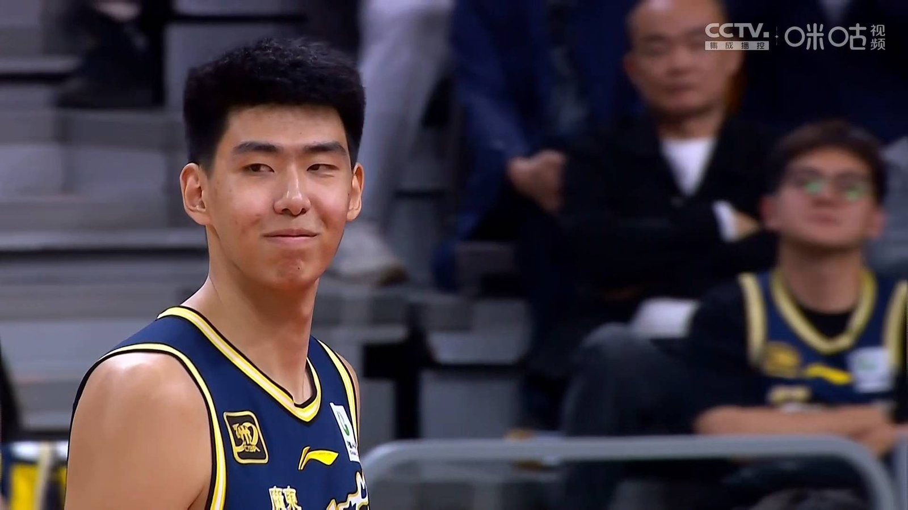
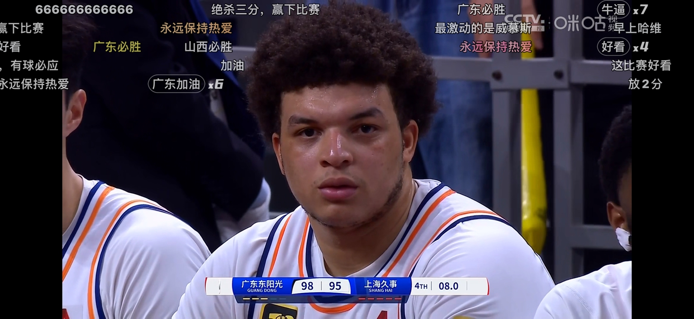

老特的信用度在我村的小卖部赊一包辣条都赊不了
那破梨竟然是真的
半夏被追着吃梨那段，刚开始看很明显的特效痕迹，结果全是真梨🍐[捂脸][捂脸][捂脸]
这🍐真的像特效，我还寻思这特效有点假[捂脸]
谁懂 这个间奏像是有好多好多东西匆匆闪过又抓不住的慌乱感[流泪][流泪][流泪]
每一次的随便都是蓄谋已久的见面，他真的写出来了，唱给所有人听啦[泣不成声]
感觉他一唱歌眼睛就泪汪汪的[流泪]
听汪苏泷唱歌感觉好奇妙，明明没谈过恋爱，但总觉得有个人对不起我[快哭了][快哭了]
这才是《晴》的rap 不是兜兜转转！[吐舌]
好伟大的间奏 如今哥哥是大明星了[流泪]
下次给他配一把小提琴吧[泣不成声][泣不成声][泣不成声]
这辈子子能不能看一次汪苏泷的演唱会[流泪]
这首写雨的歌 如今再播放 希望听歌的你每天都晴朗 这段旋律让我们回到那时光 那时阳光好强 日子好长 终于能等到今天的见面 在我们25年新的巡演 说了再见就会再见 每次随便都是蓄谋已久的见面
评论区发👻图的家里那两位还好吗[憨笑]
如果没有经历过这些日子的人是不能明白金明的眼泪和委屈的。生活在一个贫穷的家庭就是原罪。任何人都没错，但任何人都很痛苦。孩子受到父母的托举，站在他们用血和泪建成的高楼上看世界，看到广阔天地的时候第一个想法不是赞美和高兴，而是内疚。那种明明什么错都没犯但依然深到可以淹没你灵魂的愧疚感。吃东西时会想爸妈吃了吗，出去玩会想爸妈休息了吗，花每一笔钱都在想他们要多辛苦才能挣来。永远在想要怎么样才能回报这一切。没有人能心安理得地感到幸福，只有深深地，无尽的绝望淹没你。
爸爸说过最重的话就是叫她的全名“梁金明”[流泪]
“是荷尔蒙对抗荷尔蒙，妈妈又输了”
其实金明也没错 看到一个帖子说东亚女的一生都是在愧疚中长大的[流泪]
金明啊，妈妈并不是把她的希望放在你身上，而是希望你可以通过他们的托举让身为女儿的你能越来越好，可以有能力摆脱所有对你不好的困境
听爸爸大声喊“梁金明”三个字我都能哭的稀里哗啦的[流泪]
韩国真的很会拍这方面，描写的很真实很细腻，没有偏袒哪一方，把双方的难处很公正的摆在我们面前[流泪]
可是她知道说的话会伤害父母，每次都要那样说[流泪][流泪]然后自己又在心里内疚[流泪]
观众两边都能共情，可惜双方不能共情，真的很难受，生活中和父母就是这样的[流泪][流泪][流泪]
我被内疚感淹没了，这句话谁懂[流泪]
上次酒桌上，领导要倒半杯酒给我，我也是马上就震惊的问，领导，你怎么一杯都喝不完啊[暗中观察]
李卫最大的官是狗儿，其次潜邸奴才，最后才是两江总督[白眼]
在座的各位，要是有个人能瞬间提拔你当上省部级领导，你可能比李卫还忠心[微笑]
李卫可能是真心的。 他是雍正的人，前途都在雍正身上。雍正挂了，他也没靠山了。
李卫是真情流露，这个心理参考古代死士，搁现在来看，如果一个人给我荣华富贵，我也可以为他付出生命，一样的道理
抖音上有些人，拿李卫和人民名义里高育良比，我这么说吧，根本不在一个次元，李卫砍了高育良，肯定受处罚，罚奉一年，但是高育良在雍正时代砍了李卫，九族之内一个不剩可能都平不了雍正的怒火！
迪迦被石化后，丽娜激动的喊了一声大古，这时大家才明白，原来大古就是加坦杰厄！！！！[比心]
想想也挺唏嘘的，一个这么努力有毅力把自己各项技能都练到极限的青年演员，长相身材演技都是一流的，竟然还能被造谣，而且还有人信，这让那些内娱里躺平拿资源的，没有演技台词不行全靠滤镜妆造加持却戏约不断的情何以堪？于适没有错，错就错在太强了
于适学会游泳后还在海边救了一个小孩，学以致用，非常好的人[赞]
这小伙子没去国家队真是可惜了，一看就是个运动员的好料
突然想起来有个梗说如果世界末日来了，只能跟自担走，于适粉丝绝对是存活率最高的[捂脸]
没看这条视频之前、我都不知道于适是谁、但看完后…这哥们才多大…啥都这么厉害、无敌了啊…这时间是一点都没浪费、还有就是天赋确实无敌…
谢谢你[太阳][太阳][太阳]能让更多人通过这样的视频了解真实的我，而不是通过流言蜚语、道听途说来误解我[感谢][感谢][感谢]
这货把雄性属性点满了
猫：我会死吗
猫:
后半段是进园区了吗[流泪]
猫：这招太狠了
这是什么神兵法器？
这俩出现在同一部电影里 这电影就定性了
这片跟燃冬谁分得清啊[苦涩]
小黄鸭为啥这么喜欢三角恋的剧情啊[捂脸][捂脸]感觉她好喜欢那种全剧所有男人都喜欢她的设定
原著是很好看的短篇悬疑，国产剧国产电影不谈恋爱会死
看到名字我还愣了一下 我看过风中的火焰 还有平原上的摩西哈哈哈哈哈哈哈
这是燃冬前传吧[黑脸][强壮]
上海防住了徐杰，广东防住了洛夫顿[泪奔]
胡明轩满血复活了，[赞][赞][赞]，只是可惜赵睿大伤了[流泪][流泪][流泪]
徐昕越来越自信了 一上场那邪魅一笑 哈哈 防的好[赞]
我今晚怎么样[看] 
全程看他笑。最后不笑了 
兄弟们跟上
来一个全是猫猫的
Read more: